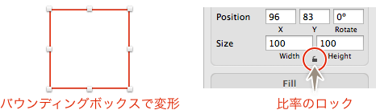
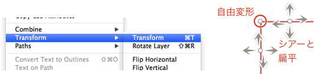
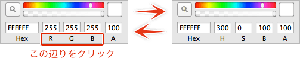
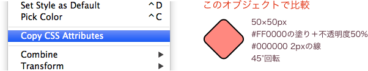
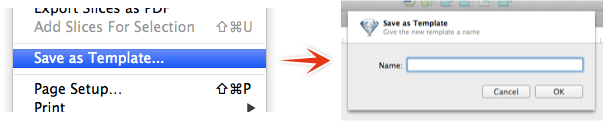
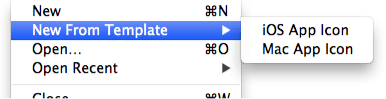
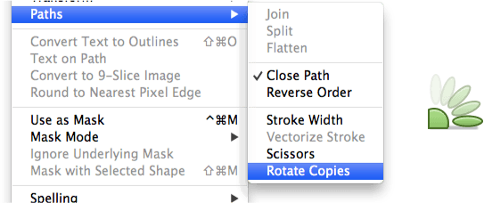
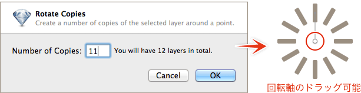
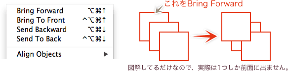

Sketch.app Advent Calender 2013 23日目の記事です。今回はこれまでの解説で紹介（忘れてたのも含む）できなかった機能の解説をお届けします。
Sketchの基本。というSketch（Sketch 3）の基本操作にフォーカスした電子書籍をリリースしました。詳しくはこちらの「Sketchの基本。」のページをご覧ください。
この記事はSketch 2を元にした記事です。最新版の動作とは異なる可能性が高いため、参考程度にご覧ください。
紹介しきれなかった機能
変形
拡大縮小ならば、オブジェクトを選択している時に表示されているバウンディングボックスでできます。バウンディングボックスが表示されていない場合は、［View］にある「Show Selection Handles（ショートカット：Control＋H）」で表示できます。

また、インスペクタのオブジェクトサイズの下にある「鍵」マークのオン/オフで比率のロックを制御します。
［Edit］→［Transform］にある「Transform」（ショートカット：Command＋T）で自由変形やシアーなどができます。四隅をドラッグすれば自由変形、四辺をドラッグすればシアーと「鍵」のオン/オフに関わらず扁平変形になります。

カラーピッカーをHSBに切り替え
カラーピッカーで、色の頭文字のあたりをクリックすると、RGBとHSBを切り替えることができます。

文字のアウトライン化
［Edit］にある「Convert Text on Outlines」（ショートカット：Command＋Shift＋O）で、文字のアウトライン化ができます。Illustratorのように太ったりはしませんが、やはりオリジナルと比較するとやや変形してしまいます。
9スライス
FireworksやFlash、最近のIllustratorをお使いの方なら「あれか！」とお分かりいただけると思います。
拡大縮小時に、変形する場所と変形しない場所をエリアで指定することができます。ただ残念なことに、適用できるのがビットマップだけです。
ビットマップを選択し、［Edit］にある「Convet to 9-Slice Image」を適用すると、9つのエリアに分割されたようになります。線が交差しているポイントを動かして、エリアを指定します。4隅が変形しない部分、上下が横方向のみ変形、左右が縦方向のみに変形、中央がもれなく変形する場所になります。
グラデーションやパターンだと使いづらいですが、「ボタンが画像でしかない」とか、Androidの9patchの確認などにも使えますね。
CSSのプロパティ
他のサイトや私の記事でも散々紹介してきましたが、［Edit］にある「Copy CSS Attribute」でオブジェクトからCSSプロパティを取得できます（コンテキストメニューにもあります）。

各アプリケーションで、同じようなオブジェクトから取得したプロパティを「各アプリが出力するCSSプロパティの比較。」に並べてます。
現在のドキュメントをテンプレートとして保存
［File］→「Save as Template…」で名前を入力すると、現状をテンプレートとして保存できます。

テンプレートを使うには、［File］→「Open from Template…」から選択します。

回転コピーツール
オブジェクトを簡単に回転コピーできる機能があります。［Edit］→［Paths］にある「Rotate Copies」か、ツールバーのアイコンをクリックします。

ダイアログは「コピーする数」、例えば回転コピーの結果を12にする場合は、11を入力します。中心をドラッグし回転の中心を決定したら、Returnキーで確定します。

回転コピーで作成されたオブジェクトは、結合の合体状態になります。
レイヤーの順番を変更
当然ながらレイヤーパネルで下にあるオブジェクトが、アートボード上でも下（背面）に配置されていることになります。
順番を変更するには、レイヤーリスト上でドラッグして入れ替えるか、［Arrange］にある、
- 「Bring Forward（前面に：ショートカット Command＋Option＋↑）」
- 「Bring to Front（最前面に：ショートカット Command＋Option＋Control＋↑）」
- 「Send Backward（背面に：ショートカット Command＋Option＋↓）」
- 「Send to Back（最背面に：ショートカット Command＋Option＋Control＋↓）」
のいずれかを選択します。

ちなみに、条件がイマイチ分かりませんが、「Bring Forward」は1つずつ前面に出るのではなく、重なっているオブジェクトの一番上に移動する場合があります。